SMK-37 Elite
User Manual
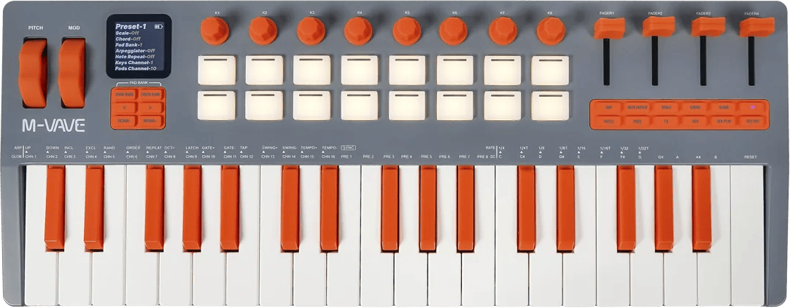
Wire Connection
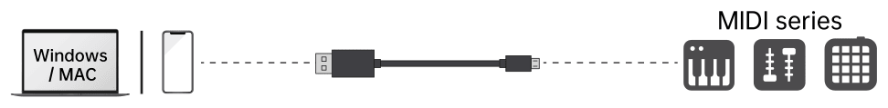
Wireless Connection
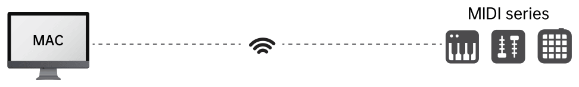
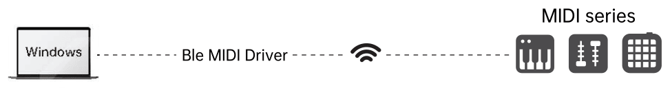
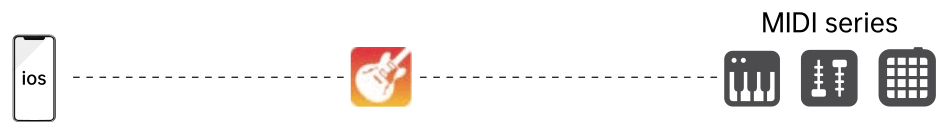
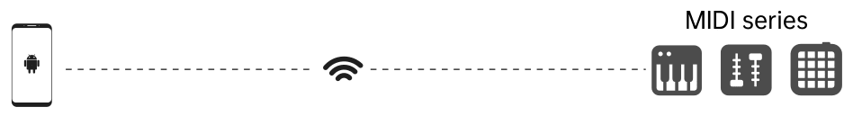
FAQ
Why my device doesn't make a sound:
A MIDI device does not generate sound on its own, as it transmits MIDI signals to trigger software sound sources or hardware devices with MIDI output. The product itself includes built-in sound sources, which can be used by connecting headphones or audio equipment. It can also function as a MIDI controller when connected to host software.
What software can I use with MIDI device:
Popular DAWs include Ableton Live, FL Studio, Cubase, Pro Tools, Bitwig, and Logic Pro X for Windows and Mac (paid with free trials), while Cakewalk (Windows), GarageBand (Mac, iOS), and Bandlab (all platforms) are free options.
Why there is latency after connecting:
Latency is not caused by the device but by the DAW software. To reduce latency, set the buffer size to a lower value (normally, a buffer size of 128 will not result in noticeable latency).
Note: Lowering the buffer size leads to higher CPU consumption.
Wireless connection latency:
Similar to a wired connection, a wireless connection won't introduce much extra noticeable latency. Adjust the buffer size to reduce latency.
To change the MIDI Channel:
Use MIDI Suite to modify the MIDI channel (1-16) and other parameters for Pads and Keys. Access Midi Suite by scanning the QR code for mobile devices or downloading Midi Suite from the website for PC/MAC. (https://www.m-vave.com/appdownload)
How to Map the Pads or Keys to control DAW:
To assign Pads or Keys to control DAW functions, use the MIDI Learn feature in your DAW. This allows you to map DAW parameters to any pad or key on your MIDI device.
Connect to audio interface or computer:
The MIDI device can connect directly to a computer instead of an audio interface, as the audio interface handles all audio output.
Packing List
- SMK-37 Elite MIDI Keyboard
- USB connection cable
- User manual
Function Overview
- 37-key velocity-sensitive MIDI keyboard with a three-octave range and built-in DX-7 FM synth engine.
- 1.54" display.
- Pitch and modulation wheels
- 16 RGB backlit pads with velocity and aftertouch support.
- 4 faders, expandable to 8 using the fader bank button.
- Eight 360-degree rotary encoders.
- Built-in arpeggiator and note repeat function.
- Built-in sequencer with support for saving 8 patterns
- Internal Sound Source: This device features a built-in sound source with emulations of the classic Yamaha DX-7 FM synthesizer. The Yamaha DX-7, released in 1983, revolutionized digital synthesis with its use of frequency modulation (FM) synthesis, offering a wide range of complex and expressive sounds. Renowned for its electric pianos, bells, and evolving textures, the DX-7 remains a cornerstone in music history. Several parameters can be adjusted directly on the device, while other parameters can be adjusted through the USB MIDI output port. For detailed information, check page 7.
Note: Yamaha and DX-7 are trademarks of Yamaha Corporation. This product is not an official Yamaha product and has no affiliation with or authorization from Yamaha.
Making The Connection
USB Connection
Plug the cable through the USB port to the Windows/Mac and it will automatically be recognized as a MIDI device and an audio device. When plugged into the USB-C port, the SMK-37 Elite will be charging at the same time (Red light: charging, Green light: charging complete).
Audio Playback and Recording
For playback, there are two options: When the patch function is enabled, you can use the keys and pads to trigger the internal sound source. The SMK-37 Elite also supports audio playback from the host. For added fun, you can play audio from the host while simultaneously enabling the built-in synth engine. There are two ways to play audio through the SMK-37 Elite:
- USB Connection: When connected via USB to a PC/Mac, set the audio output device to "SMK-37 Elite." The audio will then play through the audio jack on the device.
- Wireless Connection: When searching for the device via BT, two options will appear in the list: one for audio playback ("SMK-37 Elite") and one for MIDI ("SMK-37 Elite_BLE"). Connect to "SMK-37 Elite" and set it as the audio output device in your system audio settings.
For recording, there are two options:
- Using USB: On Windows (PC), install a virtual ASIO driver and set the input device to SMK-37 Elite in your recording software.
On macOS, use Core Audio (no additional drivers are required) and set the input device directly to SMK-37 Elite. This will allow both recording and playback. - Using an Audio Cable: Connect the audio cable to the appropriate input on your recording device and configure your recording software to use the audio input.
Wireless MIDI Connection
Press and hold the BT button. When the light is flashing, the wireless function is activated. When the light stays on, the connection is successful. The wireless function is turned on by default. Once you connect to a host, it will automatically reconnect the next time. If you want to connect to a different host, please forget the device on the current host first.
Wireless MIDI Adapter
Plug Wireless Adapter B into Windows/Mac; the connection is successful when both lights stay on.
Direct MIDI Wireless
Activate the BT function of Windows/Mac/iOS/Android and select SMK-37 Elite on the list (Windows users need BT 5.0 and an extra BLE MIDI Driver).
MIDI OUT Connection
- Cable Connection: Use a 3.5mm to MIDI adapter to connect to an external device that supports MIDI In.
- Wireless connection: Use Five-Pin wireless MIDI adapter A, connecting it to a device such as a synthesizer or other device that supports MIDI IN.
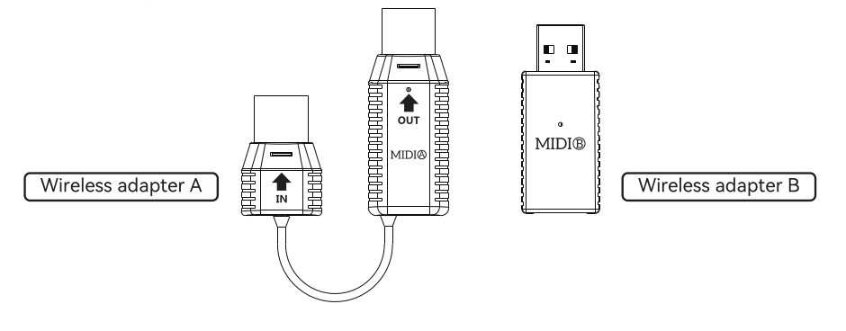
Panel Introduction
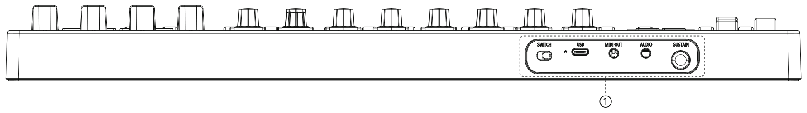
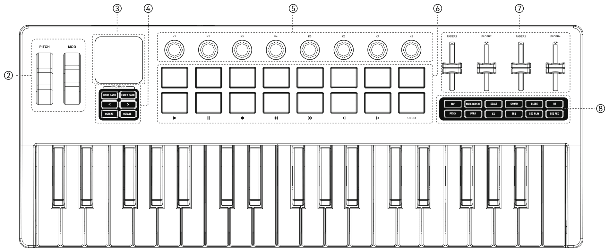
① Back of Device
- Audio Output: 3.5mm audio output jack.
- MIDI Out Port: Use a 3.5mm to MIDI adapter to connect to an external device that supports MIDI In.
- Power: Switch to turn on/off the MIDI keyboard;
- USB: USB-C Connection port;
- Sustain: 1/4 inch sustain pedal connection port;
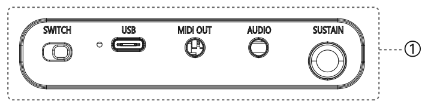
② Pitch Wheel and Modulation Wheel
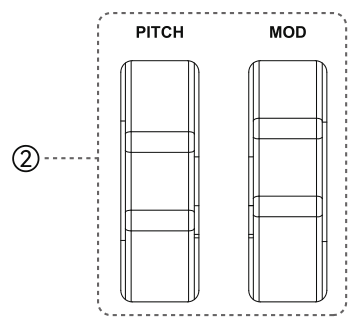
Pitch Wheel: Scroll the pitch wheel up and down to control the pitch bend. The center position is the original pitch of the sound; lifting the finger will release the sound to the original pitch.
Modulation Wheel: Scroll the modulation wheel to send continuous MIDI CC messages.
Note: (You can assign the Modulation wheel using the MIDI Learn function of your DAW.)
③ Display area
The display area provides visual feedback for various device settings and modes.
④ Button Area:
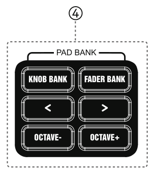
- Knob Bank: Press this button to switch control to knobs 9–16.
- Fader Bank: Press this button to switch control to faders 5–8.
- Pad Bank: Press both Knob Bank and Fader Bank buttons simultaneously to switch control to pads 17–32.
- Left Button: Sends custom MIDI messages or accesses specific functions described on the next page.
- Right Button: Sends custom MIDI messages or accesses specific functions described on the last page.
⑤ Knobs
Eight assignable 360-degree rotary encoders. These knobs can send Aftertouch, MIDI CC, or pitch information, configurable through the MIDI SUITE software.
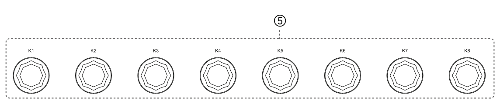
⑥ Pads
Sixteen RGB back-lit pads with velocity-sensitive & aftertouch.
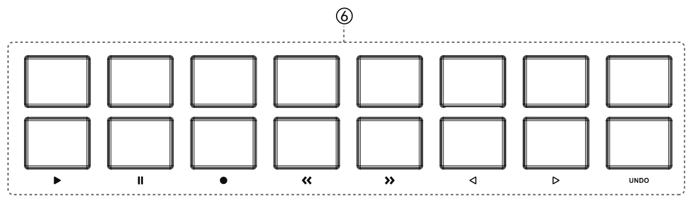
⑦ Faders
Four assignable faders that can be used to control various parameters in your DAW or device software, such as volume, pan, or MIDI CC values.
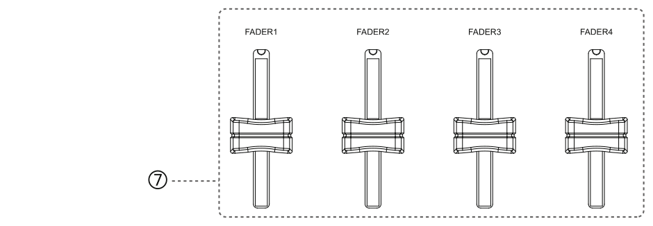
You can customize the MIDI messages sent by the Faders/Knobs/Pads using the MIDI Suite software, available on all platforms.
⑧ Button Area 2:
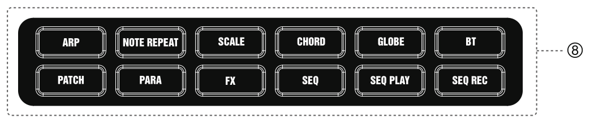
ARP:
Press the ARP button to enable the Arpeggiator function. The Arpeggiator automatically plays a sequence of notes based on the keys you hold. To adjust the arpeggiator parameters, press and hold the ARP button while rotating a knob. Alternatively, press and hold the ARP button while pressing specific keys to change the arpeggiator settings.
| Mode-Up | K1 |
| Octave-3 | K2 |
| Gate-35 | K3 |
| Swing-55 | K4 |
| Tempo-55 | K5 |
| Rate-55 | K6 |
| Latch-off | K7 |
Modes: These determine the order in which the held notes are played:
- Up: Notes are played in ascending order, from the lowest to the highest pitch.
- Down: Notes are played in descending order, from the highest to the lowest pitch.
- Incl (Inclusive): Notes are played in ascending order and then back down, with the lowest and highest notes played twice, creating a mirrored effect.
- Excl (Exclusive): Similar to Inclusive, but the lowest and highest notes are only played once in the sequence.
- Random: Notes are played in a random order, creating unpredictable and interesting patterns.
- Order: Notes are played in the precise order in which you press them.
- Repeat: Held notes and pads will repeat continuously, creating a sustained, rhythmic texture.
Parameters: These settings allow you to further shape the arpeggio's sound and feel.
- Octave: This setting expands the arpeggio across multiple octaves. For example, a setting of "1" will play the held notes in the original octave and one octave higher.
- Gate: Controls the length of each arpeggiated note. Higher values result in longer, more sustained notes, while lower values create shorter, staccato notes.
- Swing: Adds a rhythmic "groove" to the arpeggio by slightly delaying certain notes. Higher swing values create a more pronounced, syncopated feel.
- Tempo: Sets the overall speed of the arpeggio, measured in beats per minute (BPM). The range is typically from 30 to 300 BPM.
- Rate: Determines the rhythmic division of the arpeggio, relative to the tempo. Common values include 1/4 notes, 1/8 notes, 1/16 notes, and their triplet equivalents (indicated by "T," e.g., 1/4T). This allows you to create arpeggios with different rhythmic complexities.
- Latch: When enabled, the arpeggiator continues to play even after you release the keys. This is useful for creating sustained arpeggios without having to hold down the keys.
Note: With Latch activated, pressing the Arp button will not deactivate the arpeggiator; you must first disable Latch.
Note Repeat:
Note Repeat triggers repeated notes while holding a pad.
| Gate-35 | K1 |
| Swing-55 | K2 |
| Tempo-55 | K3 |
| Rate-55 | K4 |
| Latch-off | K5 |
- Gate: Adjust the length of each repeated note. Larger values result in longer note durations.
- Swing: Add rhythmic variation to the repeated notes. Higher swing values create a groovier feel.
- Tempo: Set the tempo for the note repeat function.
- Rate: Set the time division for note repeats based on the tempo (e.g., 1/4, 1/4T, 1/8, 1/8T, 1/16, 1/16T, 1/32, or 1/32T).
- Latch: When enabled, the repeated notes will continue playing even after you lift your fingers from the pads.
(Note: If latch is on, pressing the Note Repeat button will not exit the note repeat function. You must turn off the latch before exiting.)
Scale:
| Base-C | K1 |
| Scale-Major | K2 |
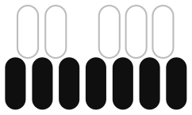 | |
- Base: Set the base note of the scale.
- Scale Type: Select the scale type from the following options: Major, Minor, Dorian, Lydian, Major Pentatonic, Minor Pentatonic, or World Scales 1–5.
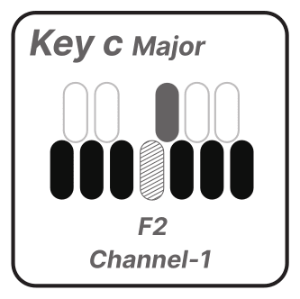
When the scale is set (e.g., to C Major), all notes within the scale will appear in blue on the screen. If you press a note outside the scale, it will automatically be corrected to a note within the scale, and the incorrect note will appear in grey.
Chord:
| Chord-Maj | K1 |
| Type-Triad | K2 |
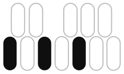 | |
- Chord: Choose the basic chord quality, such as Major, Minor, Diminished, or Augmented.
- Type: Add chord extensions to create more complex harmonies, such as Triad (basic three-note chord), 7th (four-note chord), 9th, 11th, or 13th (extended chords).
Globe Menu:
| Preset-1 | K1 |
| Key Chn-1 | K2 |
| Pad Chn-10 | K3 |
| Key Vel-2 | K4 |
| Pad Vel-2 | K5 |
| Pad Aft-on | K6 |
| Pedal-SUS | K7 |
| Rest Factory | K8 |
Access the Globe menu by holding the Globe button. While holding the Globe button:
- Knob 1: Switch between presets 1–8.
(You can edit the parameters for Knobs, Pads, and Faders, and save them as custom settings in the presets using the MIDI Suite software for PC/Mac/Android/iOS.) - Knob 2: Change the key channel (range: 1–16).
(Alternatively, hold the Globe button and press the corresponding channel number printed above the keys.) - Knob 3: Change the pad channel (range: 1–16).
(Alternatively, hold the Globe button and press the corresponding pad number, 1–16.) - Knob 4: Adjust the key velocity curve. A setting of 4 results in full velocity, meaning each key press triggers at maximum velocity.
- Knob 5: Adjust the pad velocity curve (functions similarly to the key velocity curve).
- Knob 6: Toggle pad aftertouch on or off.
(When enabled, holding a pad sends continuous aftertouch MIDI messages.) - Knob 7: Switch the sustain pedal function between Sustain and Expression.
(In expression mode, the pedal sends custom continuous MIDI messages, with detailed parameters editable via the MIDI Suite software.) - Globe Button + Right Button: Hold the Globe button and press the Right button to access the next page, which includes factory reset.
Patch:
The device includes four banks of built-in presets. To select presets within each bank, hold the Patch button and rotate knobs 1–4.
| BANK A | K1 |
| BANK B | K2 |
| BANK C | K3 |
| BANK D | K4 |
| Latch-Off | K5 |
| SAVE | K8 |
You can also import custom presets using the MIDI Suite software for Windows/Mac or by directly sending the preset files through the USB MIDI port using other software. When importing presets, use knobs 1–4 to select the desired save slot on the device.
- Latch: When turned on, it will latch the screen to this page, so it won't vanish after releasing the button. This allows browsing the presets while playing.
(When the Patch button is unpressed, the audio output port will not produce any sound.)
PARA:
Set some base parameters of the built-in DX-7 engine; these can be saved to the current presets.
| Algorithm-32 | K1 |
| Feedback-56 | K2 |
| Mono/Poly | K3 |
| Volume-12 | K4 |
| Latch-Off | K5 |
- Algorithm: Choose from 32 algorithms that define how the internal operators interact (modulate each other or output sound). Each algorithm dramatically alters the tonal structure, providing a wide range of FM sounds.
- Feedback: Adjust feedback to allow an operator to modulate itself, producing richer harmonic content or more distorted sounds.
- Mono/Poly: Switch between monophonic (one note at a time) or polyphonic (multiple notes simultaneously) playback modes.
- Volume: Control the overall volume output of the device.
- Latch: When turned on, it will latch the screen to this page, so it won't vanish after releasing the button.
FX:
Add some effects to enrich the sound; these parameters can also be saved into the presets.
| Cut off-0 | K1 |
| Distortion-0 | K2 |
| Reverb-0 | K3 |
| Delay-0 | K4 |
| Latch-Off | K5 |
- Cutoff: Adjust the cutoff frequency of the low-pass filter to shape the tonal balance of the sound.
- Distortion: Control the dry/wet mix of the distortion effect to add harmonic saturation or a more aggressive tone.
- Reverb: Control the dry/wet mix of the reverb effect to add depth and space to the sound.
- Delay: Control the dry/wet mix of the delay effect to create echoes and rhythmic patterns.
- Latch: When turned on, it will latch the screen to this page, so it won't vanish after releasing the button.
Sequencer:
The sequencer allows you to create and play back note patterns step-by-step or in real time, with up to 64 steps and customizable parameters like Swing, Gate, and Tempo.
| Pattern-1 | K1 |
| Mode-Drum | K2 |
| Step-16 | K3 |
| Gate-50 | K4 |
| Swing-50 | K5 |
| Tempo-120 | K6 |
| Rate-1/4 | K7 |
| SAVE | K7 |
| Clean Pattern | K8 |
(Note: When Arp and Note Repeat are enabled, the sequencer cannot be activated.)
Entering the Sequencer:
Press the Seq button to enter the sequencer. Press and hold the Seq button for additional options.
Pattern:
The SMK-37 Elite supports saving up to 8 patterns directly on the device. Any edits made to a pattern are automatically saved to the current pattern slot.
Key Mode:
In Key Mode, the 16 pads function as 16 steps. There are two ways to record notes in this mode:
- Manual Recording:
Hold a pad to select the step, then press the desired keys to record them into that step.
To remove a recorded key, press it again while the step is selected.
The yellow rectangle represents the current step number. Use the Left and Right arrow buttons to navigate between different pages of steps. - Automatic Step Recording:
Press the Seq Rec button to enable recording (the button will start flashing).
While in recording mode, every key you press will automatically be recorded into the current step, and the sequencer will advance to the next step. You can also record multiple keys simultaneously into a single step.
Extending Step Duration:
To make a step last across multiple steps, press and hold the start step and the end step simultaneously, then press the desired key to record it across the selected range of steps.
Drum Mode:
In Drum Mode, the 16 pads function as 16 tracks, each used to trigger a different drum sound.
- Selecting a Track:
Press a pad once to select the track you want to trigger.
Press the same pad again to enter the track editor for that specific drum sound. - Editing Notes in a Drum Track:
Within the track editor, you can edit notes across up to 64 steps.
The screen will display the step sequence for the selected track. - Switching Between Tracks:
To re-enter a different track, hold the Seq button and press another pad to select a different drum track.
Press the pad again to enter the track editor for the selected track. - Assigning MIDI Notes for Each Drum Track:
To assign MIDI messages to each pad, use the MIDI Suite software for Windows/Mac. This allows you to customize the MIDI note for each drum track.
Live Mode
Live Mode allows for real-time recording of MIDI notes with more precise time divisions, making it ideal for capturing dynamic performances and intricate rhythms. This mode is designed to give you flexibility in creating expressive and complex patterns on the fly.
In Live Mode, the sequencer captures notes as you play them, with each note being recorded in real-time rather than assigned to fixed steps. This enables a more fluid and natural workflow compared to traditional step sequencing.
Step: Determines how many steps the sequencer will play in a loop, with a maximum of 64 steps.
More steps allow for longer patterns, while fewer steps result in shorter, repeating loops.
Gate: Sets the length of each note.
A higher gate value results in longer note durations, while a lower value creates shorter, more staccato notes.
Swing: Adds a rhythmic deviation to the notes, creating a "groovy" or "humanized" feel. The higher the swing value, the more the timing of certain notes will shift, giving your sequences a less robotic and more organic quality.
Tempo: Sets the playback speed of the sequencer, measured in beats per minute (BPM). Adjusting the tempo affects the overall pacing of your sequence. This is especially useful for synchronizing with external devices or matching the desired song speed.
Rate: Determines the time division of the note playback relative to the tempo. Available divisions include: 1/4, 1/4T, 1/8, 1/8T, 1/16, 1/16T, 1/32, and 1/32T.
These divisions let you create anything from slow, deliberate patterns to fast, intricate arpeggios or rhythms.
Clear the Current Pattern Slot: To clear the current pattern slot: Press and hold the Seq button and press the Right button. Navigate to the Clear Pattern parameters. Rotate the knob and press the Reset Key (printed on the last C note) to clear the current pattern.
SAVE: Manually save the current sequencer pattern.
Technical Parameters
| Product Dimensions | 458mm (L) x 181mm (W) x 50mm (H) |
|---|---|
| Product Weight | 1.1Kg |
| Keys | 37 velocity-sensitive keys |
| Pads | 16 RGB Back-Lit Pads with velocity-sensitive and aftertouch |
| Knobs | 8 assignable endless 360 degree encoders |
| Faders | 4 assignable slide potentiometers |
| Endurance time | 10 hours |
| Touch Strips | Physical pitch bend control & Modulation control |
| Output | 1/4 inch Sustain pedal connection port |
| USB-C port | |
| Wireless MIDI connection with Windows/Mac/iOS/Android | |
| 3.5mm audio output jack | |
| 3.5mm MIDI Out jack | |
| Power | Battery supplied or USB-bus-powered |
| Battery Model/Type | 704060 |
| Battery Nominal Voltage | 3.7V |
| Battery capacity | 2000mAh |
| Operating Frequency Band | 2403~2478MHz |
| Maximum Radio-Frequency Power | 9dBm |
MIDI Connection Method
Our device is a class-compliant device, which means when using a USB cable, it won't need any driver. Software that supports MIDI will automatically recognize the device.
Wireless for Windows: Download and install the BT MIDI Connector from the QR code below to use our devices wirelessly (Requires Windows 10 or later).
Wireless for Mac:
- Open the Audio MIDI Setup
- Open MIDI Studio
- Click the BT icon
- Find the device and click 'Connect'
Wireless for iOS/Android: For iOS/Android devices, it requires software that supports BLE MIDI. Connect the SMK-37 Elite within software like GarageBand, FL Studio Mobile, or Cubasis LE.
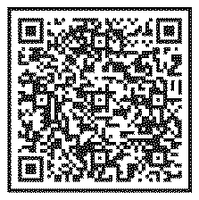
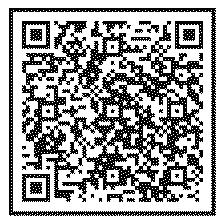
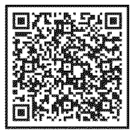
FCC Warning Statement
★ Changes or modifications not expressly approved by the party responsible for compliance could void the user’s authority to operate the equipment. This equipment has been tested and found to comply with the limits for a Class B digital device, pursuant to Part 15 of the FCC Rules. These limits are designed to provide reasonable protection against harmful interference in a residential installation. This equipment generates, uses and can radiate radio frequency energy and, if not installed and used in accordance with the instructions, may cause harmful interference to radio communications. However, there is no guarantee that interference will not occur in a particular installation. If this equipment does cause harmful interference to radio or television reception, which can be determined by turning the equipment off and on, the user is encouraged to try to correct the interference by one or more of the following measures:
- Reorient or relocate the receiving antenna.
- Increase the separation between the equipment and receiver.
- Connect the equipment into an outlet on a circuit different from that to which the receiver is connected.
- Consult the dealer or an experienced radio/TV technician for help.
FCC Radiation Exposure Statement
The device has been evaluated to meet general RF exposure requirement. The device can be used in portable exposure condition without restriction.
This device complies with Part 15 of the FCC Rules. Operation is subject to the following two conditions:
(1) This device may not cause harmful interference.
(2) This device must accept any interference received, including interference that may cause undesired operation.